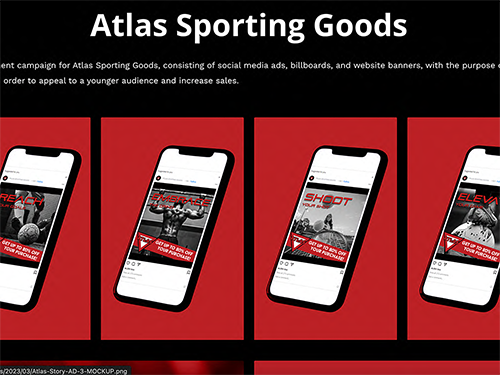
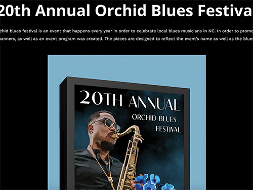

Bio.
Graphic designer and illustrator who is dedicated to helping my clients bring their vision to life.“I found I could say things with color and shapes that I couldn’t say any other way—things I had no words for.”— Georgia O’Keeffe.
Projects
-

Atlas Sporting Goods
An advertisement campaign for Atlas Sporting Goods, consisting of social media ads, billboards, and website banners, with the purpose of rebranding their image, in order to appeal to a younger audience and increase sales.
-

20th Annual Orchid Blues Festival
The annual orchid blues festival is an event that happens every year in order to celebrate local blues musicians in NC. In order to promote the event, posters, and banners, as well as an event program was created. The pieces are designed to reflect the event’s name as well as the blues theme.
About Me
Born in Manhattan NY, from a young age I have always had a passion for visual storytelling and the arts. I now pursue that passion by helping others realize their creative visions and dreams. Whether it’s illustrating a book cover, designing a product’s packaging, creating an advertisement campaign, or developing a local business/event’s brand identity, I have the drive to help others bring their vision to life.